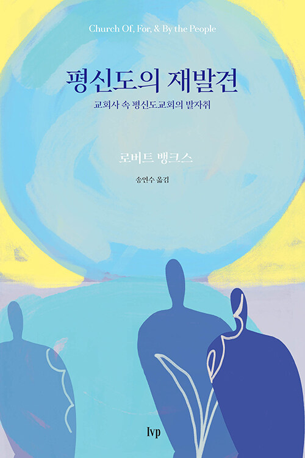

‘하나님의 백성’ 전체를 뜻하던 라오스가 어떻게 ‘성직자가 아닌 사람들’이 되었나. 초기 교회부터 교회 일치 운동까지, 억압과 재발견을 되풀이한 평신도의 2천 년사.

엠마오 · 신간 프리뷰
평신도의 재발견
교회사 속 평신도교회의 발자취
- 출판사
- IVP
- 출간
- 2026. 08. 14
- 쪽수
- 206쪽
- ISBN
- 9788932824185
- 분야
- 종교/역학 › 기독교(개신교) › 기독교(개신교) 목회/신학 › 신학일반
정가 14,000원비북스 12,600원
주문 확인 후 보통 2–4일 안에 입고됩니다 (도매처 재고 기준). 매장 픽업 또는 택배
이 책을 추천한 글
1편 · 1명의 추천
교회는 소수의 지도자가 이끄는 조직이 아니라 하나님의 백성이 함께 세워 가는 공동체다. 세계적인 신약학자 로버트 뱅크스는 성경과 2천 년 교회 역사를 따라 교회의 본질을 새롭게 조명하며, “교회란 무엇이며, 누가 교회의 주체인가?”라는 질문을 던진다. 『1세기 교회 예배 이야기』, 『1세기 그리스도인의 하루 이야기』로 한국 독자들에게 널리 사랑받아 온 저자가 평범한 그리스도인들이 어떻게 교회의 주체로 살아왔는지를 밝혀낸다.
초기 기독교는 베드로나 바울 같은 사도들만의 운동이 아니었다. 수많은 평범한 그리스도인이 각자의 삶의 자리에서 복음을 전하고 서로를 섬기며 공동체를 세워 갔다. 시간이 흐르면서 교회가 점차 제도화·위계화되고 평신도의 역할이 축소되는 과정과, 본래의 공동체적이고 참여적인 교회를 회복하려 했던 다양한 운동을 함께 살펴보며 오늘날의 평신도교회가 유구한 교회사 속 흐름의 연장선에 있음을 보여 준다.
오랜 세월 여러 지역의 독립 교회와 파라처치, 선교 현장을 경험해 온 저자는 세계 곳곳의 교회와 공동체 사례를 통해 모든 그리스도인이 자신의 은사와 부르심에 따라 함께 교회를 세워 가는 공동체성을 제시한다. 김종호, 배덕만, 양현혜, 전성민이 추천했으며, 각 장 끝에는 한국 ‘평신도교회 공부모임’의 질문과 답변을 수록했다. 1세기 교회에서 오늘날까지 이어져 온 평신도 중심의 교회 전통을 다시 발견하며, 오늘의 한국 교회가 회복해야 할 교회의 본질과 가능성을 성찰하게 한다.
- 한국어판 서문: 평신도교회의 회복을 향한 초대
- 옮긴이 서문: 루터가 마지막으로 꿈꾸던 교회의 모습
- 프롤로그: 교회 역사의 전환점을 예고하는 씨앗
- 1장 초기 기독교는 평신도 중심 운동이었다
- : 모든 성도가 함께 세워 간 교회의 원형
- 2장 종교개혁 이전까지의 평신도교회 역사
- : 성경적 모델로부터의 후퇴와 부흥의 시기
- 3장 종교개혁 이후 평신도교회 운동의 발자취
- : 초대교회의 원리를 회복하고 지지한 후대의 인물들
- 4장 오늘날 평신도 기반 교회를 시작하고 발전시키기
- : 초대교회의 원리를 오늘의 공동체에 적용하기
- 에필로그: 제도 변화를 향한 섭리적 부르심
- 주